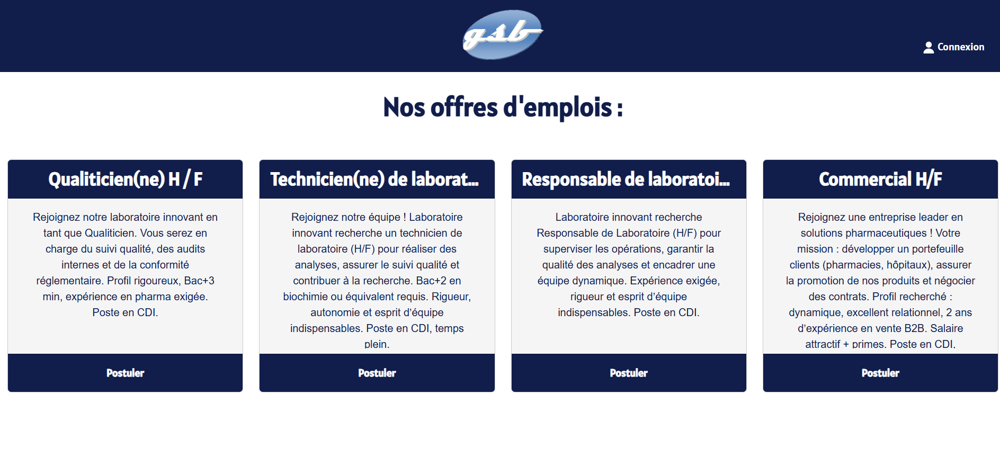
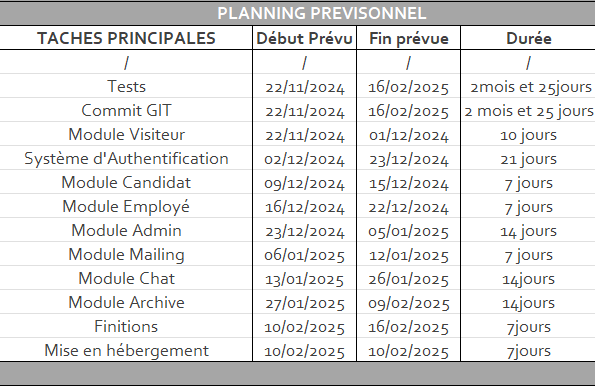
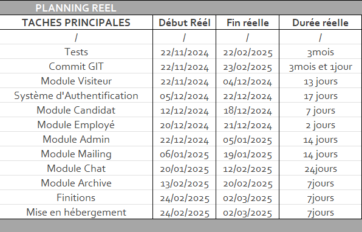

Présentation
GSB Recrutement est une application web conçue pour l'entreprise fictive Galaxy Swiss Bourdin (GSB) dans le cadre de l’évaluation du BTS SIO option SLAM. Ce projet avait pour objectif de fournir un outil informatique aux employés du service des ressources humaines, afin de leur permettre de gérer les candidatures de manière plus efficace, sécurisée et centralisée. Le développement s’est déroulé entre novembre 2024 et mars 2025, et a englobé non seulement la création de l’application, mais également la gestion de projet, la mise en place de tests, ainsi que la rédaction d’une documentation technique et d’un guide utilisateur.
Technologies
J’ai eu l’opportunité de découvrir et d’explorer de nombreuses technologies à travers ce projet. Souhaitant me familiariser avec un framework web tout en capitalisant sur mes compétences en Python, j’ai naturellement choisi Django pour développer ce projet. Ce choix m’a conduit à utiliser l’IDE PyCharm, particulièrement adapté au développement Python et offrant une excellente compatibilité avec Django. Grâce à cet environnement, j’ai pu me familiariser avec plusieurs outils et concepts complémentaires, tels que les environnements virtuels (VENV) et les tests unitaires à l’aide de la classe TestCase. Concernant la gestion de la base de données, j’ai opté pour MySQL Workbench, qui m’a permis de manipuler les données de manière visuelle et directe, en complément de l’ORM Django. Ce projet a également été l’occasion de consolider mes compétences en Bootstrap, notamment dans la création de pages web responsives. Enfin, en matière de gestion de projet, j’ai utilisé Git, intégré à un dépôt GitHub via PyCharm, pour assurer le versioning du code. J’ai également utilisé Paint pour la création de schémas explicatifs, ainsi qu’Excel pour le suivi des tâches et la planification.
Fonctionnalités Principales
On peut séparer les fonctionnalités en deux catégories, la partie grand public et la partie employé.
-
Partie Grand Public :
- Affichage des offres actuelles
- Possibilité de candidater aux offres
- Voir un résumé de sa candidature
- Contrôle total sur ses informations de candidature (modification et suppression)
- Possibilité de discuter dans un chat avec un employé
- Mailing pour informer l'utilisateur d’événements notables à propos de sa candidature
-
Partie Employé :
- Gestion des candidatures
- Gestion des offres
- Gestion des utilisateurs
- Gestion des archives
- Possibilité de discuter dans un chat avec un candidat
- Mailing dans certains cas spécifiques
Compétences travaillées
Comme évoqué précédemment, ce projet m’a permis de découvrir et de maîtriser de nombreuses technologies ainsi que diverses méthodologies. Il a contribué à renforcer mes compétences aussi bien en programmation qu’en gestion de projet. À l’issue de cette expérience, en plus d'avoir avancé vers une spécialisation en Python, mes habitudes et mes standards de développement ont été profondément transformés

